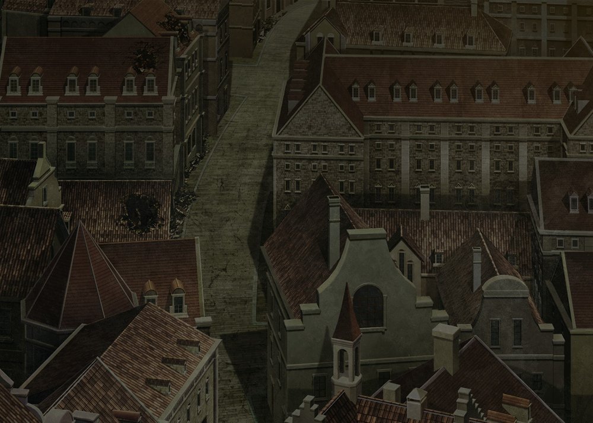
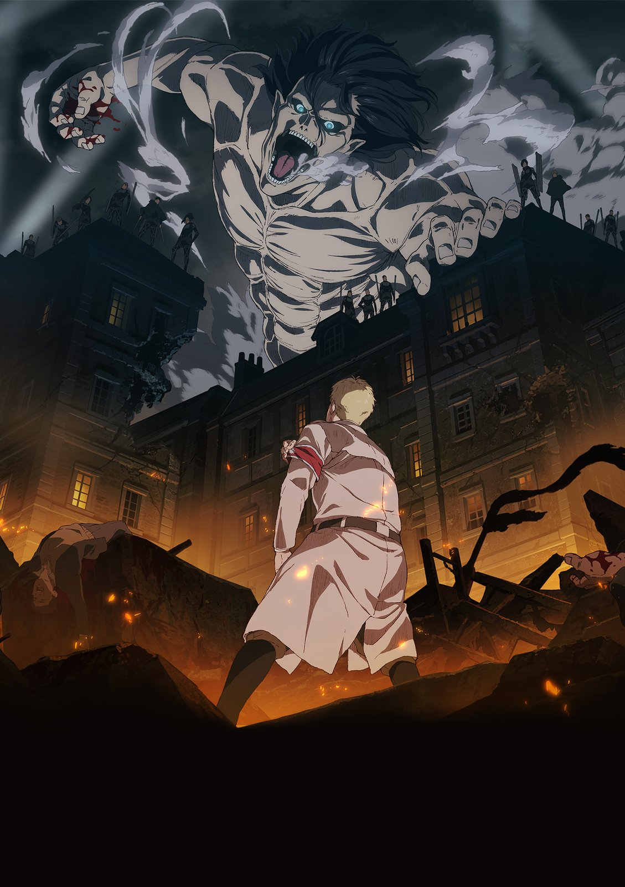
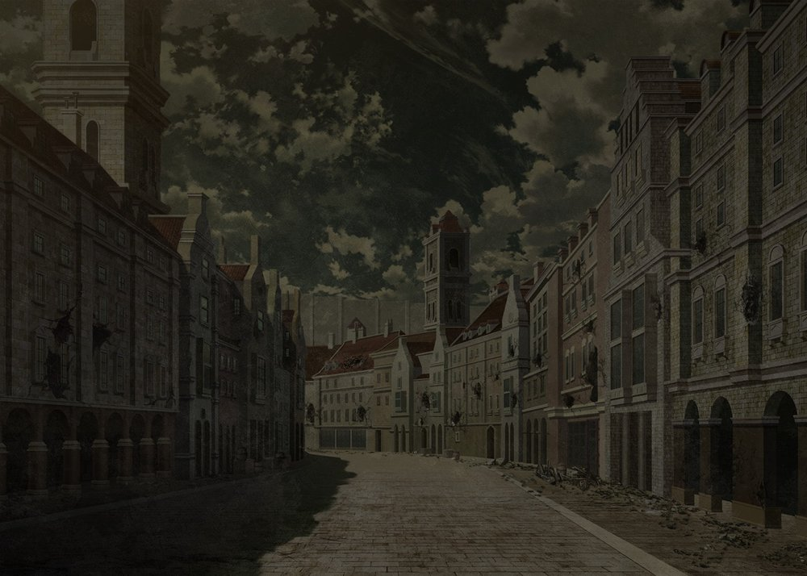
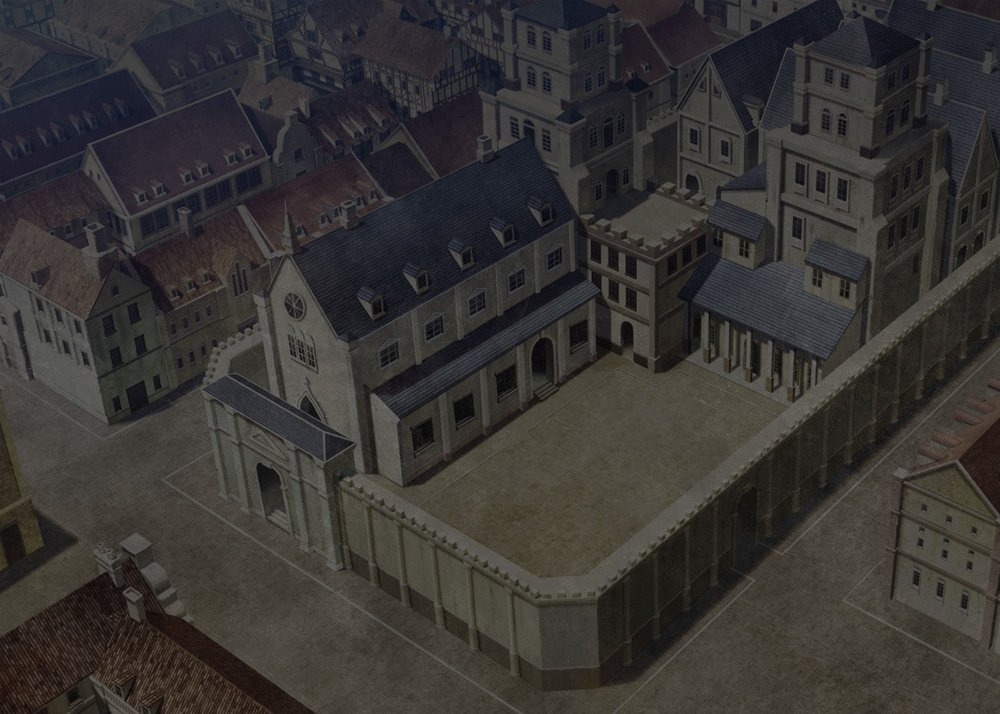
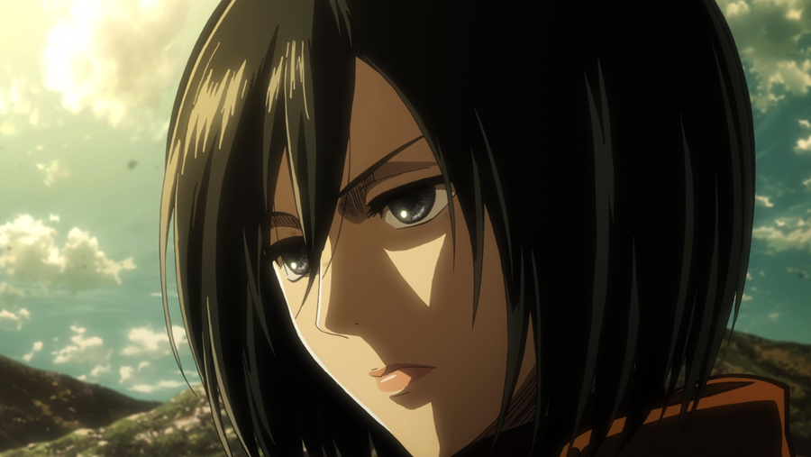
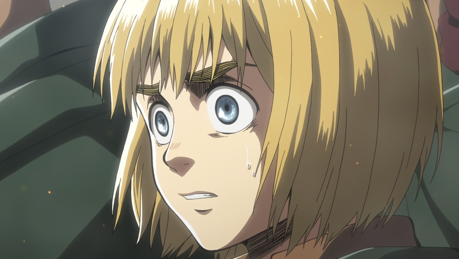

IThe outermost lineWall Maria
The first boundary against the outside world. Its fall in year 845 changes Eren, Mikasa and Armin’s lives forever.

Attack on Titan · A fan-made field guide
A world worth understanding. A freedom worth fighting for. Explore the people, powers and stories of Shingeki no Kyojin.
DEDICATE YOUR HEART. KEEP ASKING QUESTIONS.
The world we knew
For a century, concentric walls defined the limits of human life on Paradis. Safety, status and possibility depended on which side you called home.

IThe outermost lineThe first boundary against the outside world. Its fall in year 845 changes Eren, Mikasa and Armin’s lives forever.

IIThe second defenceThe middle wall shelters those displaced from Maria. Trost, its southern district, becomes a crucial test of humanity’s resolve.

IIIThe protected centreThe innermost ring surrounds the royal capital. Here, comfortable lives sit alongside carefully protected secrets.
City stills are atmospheric illustrations; they are not a map of the three walls.
Personnel files

A dream of freedom that begins on the other side of a wall.

Exceptional skill. Fierce loyalty. A promise she refuses to forget.

A curious mind that sees possibilities where others see dead ends.

Precision under pressure, and the weight of every difficult choice.
“Shinzou wo Sasageyo!”
Dedicate your heart · The spirit of the Survey Corps